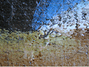
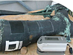

L’Ars Mensurae è una società specializzata in diagnostica e tecnologie applicate ai beni culturali. Si realizzano indagini non invasive e portatili
attraverso strumentazioni innovative e all’avanguardia, adottando un approccio interdisciplinare orientato alla tutela, valorizzazione e conoscenza del
patrimonio culturale.
Grazie all’esperienza consolidata nel settore, sviluppiamo consulenze e piani di intervento personalizzati in base alle specifiche esigenze del
committente, fornendo servizi mirati per la conservazione, la datazione, l’attribuzione e la verifica di autenticità delle opere d’arte.
Le nostre tecniche sono applicabili a opere e manufatti di qualsiasi dimensione, materiale, tecnica esecutiva ed epoca di realizzazione. Le analisi
possono essere svolte sia presso i nostri laboratori che direttamente in situ, grazie all’impiego di strumentazioni portatili e non invasive ideate e brevettata in proprio.
La versatilità e la multidisciplinarietà del team di Ars Mensurae ci permettono di rispondere efficacemente alle richieste di committenti anche molto
diversi tra loro: enti pubblici preposti alla tutela del patrimonio, cantieri didattici, restauratori privati, storici dell’arte, antiquari e tribunali e privati
possessori di opere d'arte. Offriamo loro supporti efficaci e differenziati, come expertise, referti tecnico-scientifici e ricostruzioni virtuali.
Tra i servizi proposti, Ars Mensurae promuove anche eventi scientifici e divulgativi finalizzati alla valorizzazione, alla conoscenza e alla fruizione del
patrimonio artistico-culturale, con particolare attenzione alla diffusione delle tecnologie innovative applicate alla conservazione e al restauro.
Servizi offerti:
Conservazione
Conservare una opera d'arte implica, da un lato, lo studio dello stato di benessere dell'opera sotto esame e, dall'altro, lo studio delle interazioni che
essa intrattiene con il mondo esterno, sia di natura meccanica che termodinamica.
Fondamentale è la consapevolezza che ogni opera d’arte, indipendentemente dal materiale di cui è composta, si comporta come un sistema vivo, in
continuo adattamento al contesto che la circonda. Tale approccio rappresenta il punto di partenza per comprendere i processi di degrado ai quali
l’opera è soggetta.
Questi processi di degrado vanno ad interfacciarsi con lo stato di conservazione dell'opera analizzata, determinandone l’evoluzione nel tempo.
Pertanto, per salvaguardare una opera d'arte è necessario studiarne non solo le condizioni attuali, bensì anche la sua reattività ai cambiamenti indotti
dall’ambiente sterno.
In questo contesto, le indagini diagnostiche non invasive portatili, di cui siamo innovatori, si adattano perfettamente alle esigenze legate alla
conservazione di opere d'arte. Consentono infatti analisi in situ e senza contatto, riducendo al minimo l’invasività e il rischio di interferire con
l’equilibrio dell’opera, permettendo al contempo uno studio approfondito e rispettoso di un’opera d'arte senza aggravare i suoi processi di degrado.
Datazione
La datazione dei materiali costitutivi di un'opera d'arte rappresenta un passaggio fondamentale nello studio della sua attribuzione e autenticità. Una
perizia mirata all’identificazione di un artista specifico, o della sua scuola, non può prescindere dal supporto tecnico-scientifico che confermi il periodo
storico di realizzazione dell'opera.
Nel contesto scientifico sono disponibili diversi strumenti e metodologie per la datazione, che si suddividono principalmente in due categorie:
datazione diretta e datazione indiretta. Alla prima categoria appartengono tecniche come il Carbonio-14 e la Termoluminescenza, le due metodologie
più utilizzate nel settore antiquariale. Questi metodi richiedono un microcampionamento, poiché si tratta di analisi distruttive, seppur minimamente
invasive. Alla seconda categoria appartengono invece i metodi spettroscopici e chimici, che consentono di caratterizzare i materiali presenti sull'opera,
e le tecniche di imaging multispettrale, utili per analizzare gli strati sottostanti e approfondire la conoscenza della tecnica esecutiva. Questi approcci
sono non distruttivi e non richiedono campionamento.
La Ars Mensurae è in grado di applicare con successo sia le metodologie di datazione diretta sia quelle indirette, offrendo un servizio completo e
scientificamente fondato a supporto delle opere d’arte.
Attribuzione, autenticità e perizia economica
Sviluppiamo, per lo studio di un’opera d’arte, un processo articolato che unisce aspetti storico-artistici, collezionistici ed economici.
Il processo inizia con un’analisi approfondita dell’opera, esaminandone il contenuto iconografico, lo stile, la tecnica e l’attribuzione, con l’obiettivo di
comprenderne il significato profondo, il contesto culturale e le intenzioni dell’artista. Un aspetto determinante riguarda l’identificazione dell’autore o
l’individuazione della scuola di appartenenza, attraverso lo studio del ductus pittorico e confronti stilistici, supportati da fonti storiche e cataloghi
specialistici, così da collocare l’opera entro una precisa cornice storica; si ricostruisce inoltre la provenienza e la storia collezionistica dell’opera,
tracciandone il percorso nei secoli, documentando passaggi di proprietà, contesti culturali e mutamenti nella percezione critica.
Parallelamente, vengono condotte indagini diagnostiche specifiche finalizzate all’analisi della struttura interna dell’opera e all’identificazione dei
pigmenti e dei materiali costitutivi. Tali analisi consentono di verificare la coerenza tra le caratteristiche materiche dell’opera e la tecnica esecutiva
nota dell’autore, contribuendo così all’attribuzione e alla conferma dell’autenticità.
Segue la valutazione economica, condotta attraverso criteri comparativi e parametri di mercato, come la rarità, lo stato di conservazione, la notorietà
dell’autore e le tendenze attuali.
L'integrazione tra fonti documentarie, analisi stilistiche e indagini diagnostiche fornisce dati oggettivi indispensabili per interpretare, tutelare e
valorizzare l’opera. Questa sinergia tra discipline umanistiche e tecnologie scientifiche è oggi imprescindibile per una comprensione piena dell’opera
d’arte, intesa non solo come oggetto estetico, ma come testimonianza storica e culturale, e suo valore economico.
Anticontraffazione
In collaborazione con IDArtScience srl.
Offriamo una tecnologia brevettata in grado di definire l’impronta digitale di un dipinto, attraverso un sistema innovativo e a prova di contraffazione.
L’obiettivo è garantire, fin dall’origine, l’identificabilità certa dell’opera in qualsiasi condizione. Disporre di un sistema di autenticazione e
riconoscimento di questo tipo consente di assicurare l’unicità dell’opera durante transazioni, investimenti, compravendite, pratiche assicurative,
trasporti e operazioni di valutazione o rivalutazione. In questo modo si evita che queste possano essere duplicate o sostituite, rubate o smarrite,
falsificate, o comunque sottratte alla loro tracciabilità originale; si garantisce così la massima protezione dell’integrità dell’opera, preservando il suo
valore culturale storico ed economico ed offrendo a collezionisti, galleristi, istituzioni e investitori uno strumento di tutela concreto, sicuro e
universalmente riconoscibile.
Il protocollo sviluppato non aggiunge nulla o altera in alcun modo l’opera, bensì sfrutta le proprietà intrinseche dell’opera d’arte, rendendo così il
dipinto stesso il proprio sistema antifalsificazione.
La tecnologia alla base del brevetto consente di analizzare, in modo totalmente non distruttivo, gli strati interni e nascosti dell’opera. Trattandosi di
elementi invisibili all’occhio umano e impossibili da replicare, la loro configurazione costituisce un’impronta digitale unica e irripetibile. Questo profilo
resta inalterato nel tempo, immune a eventuali tentativi di manomissione e resistente ai naturali processi di degrado.
Ogni rilevazione viene registrata su blockchain, che ne certifica la data con funzione notarile. Inoltre, grazie all’impiego di un algoritmo crittografico,
codice hash, che non contiene riferimenti espliciti né all’opera né al proprietario, viene tutelata la privacy in modo rigoroso.
Ars Mensurae insieme a IDArtScience srl si mettono così al servizio della tutela delle opere d'arte, rendendo l’anticontraffazione più efficace che mai e
trasformando l’investimento nell’arte in un’operazione sicura, tracciabile e proiettata nel futuro.
Brevetti posseduti da Ars Mensuare
FIS2007000259: Dual Mode XRF.
RM2010A000003: Identification method for paintings.
RM2013A000705: Apparatus and method for EDXRF analysis with open-air beams.
La Ars Mensurae si avvale delle seguenti metodiche diagnostiche:


Tecniche di IMAGING multispettrale
Macrofotografia in luce visibile e ultravioletta
Riprese in trans-illuminazione
Riprese in luce radente
Fluorescenza Ultravioletta
Riflettografia Infrarossa a 1100 nanometri
Riflettografia Infrarossa a 1700 nanometri (scanner InGaAs)
Infrarosso in Falso Colore
Radiografia X Digitale
Imaging tramite drone

Tecniche spettroscopiche
Fluorescenza X (EDXRF)
Spettroscopia (e microscopia) Raman
Spettrocolorimetria


Analisi ambientali e monitoraggio termoigrometrico
Dataloggers (USB e WI-FI)
Qualità dell’aria (CO, CO2..etc)
Luxometri
Termografia/ Termocamera
Estensimetri
Accelerometri
Endoscopia
Spessore patine elettromagnetico

Indagini invasive su campionamento (alcune in convenzione con l'Università di Roma ‘Sapienza’,
laboratori privati, con il centro interuniversitario CEDAD e con il CGA di Palermo)
Datazione al Carbonio 14 con AMS
Microscopia ottica con stratigrafie su sezioni lucide/ Microscopia, per l'analisi di sezioni stratigrafiche lucide e sezioni sottili
Microscopia elettronica a scansione e microsonda elettronica (SEM-EDS)
Indagini mineralogico-petrografiche in sezione sottile al Microscopio Ottico, con approfondimenti tramite
ESEM.

Indagini invasive su campionamento
Indagine microscopica dei biodeteriogeni e analisi biologiche colturali
Indagine con Spettrometria micro FT-IR
Metallografie
Diffrattometria a raggi X (XRD)
Gascromatografia/spettrometria massa